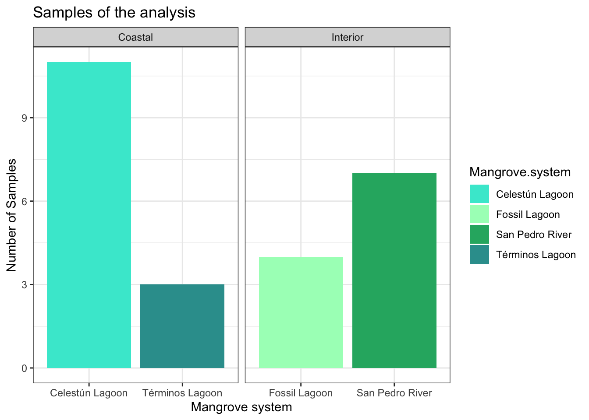

#load
physeq_qiime <- readRDS("rds/compare_mangroves/physeq_objeto_Estero.rds")Data Prepare
How similar are coastal and inland mangroves❓
To answer this question, only samples that met the selection criteria were selected for comparison with each other. These samples were as follows:
- They hailed from the same depth range.
- They hailed from the strip, in the case of coastal mangroves.
- They hailed from the flooding season, in the case of coastal mangroves.
01. Select samples
## Los filtros que hizo Yaxche02. Data preparation
02.1 Remove empty ASVs and singletons
#check data
library(microbiome)
library(dplyr)#library(microbiome)
microbiome::summarize_phyloseq(physeq_qiime)Compositional = NO21] Min. number of reads = 35812] Max. number of reads = 1504313] Total number of reads = 19263064] Average number of reads = 77052.245] Median number of reads = 783677] Sparsity = 0.5742662632375196] Any OTU sum to 1 or less? YES8] Number of singletons = 849] Percent of OTUs that are singletons
(i.e. exactly one read detected across all samples)010] Number of sample variables are: 25SampleIDBioSampleIDSRASampleNameCollection_datedepthsiteelevationBroad_scale_environmental_contextLocal_scale_environmental_contextEnvironmental_mediumLatitude_and_LongitudeGeographic.LocationStudy_zoneEcological_typeParametrosTemperaturaSalinidadpHRedox.mVS.2SO4seasonfilter2[[1]]
[1] "1] Min. number of reads = 3581"
[[2]]
[1] "2] Max. number of reads = 150431"
[[3]]
[1] "3] Total number of reads = 1926306"
[[4]]
[1] "4] Average number of reads = 77052.24"
[[5]]
[1] "5] Median number of reads = 78367"
[[6]]
[1] "7] Sparsity = 0.574266263237519"
[[7]]
[1] "6] Any OTU sum to 1 or less? YES"
[[8]]
[1] "8] Number of singletons = 84"
[[9]]
[1] "9] Percent of OTUs that are singletons \n (i.e. exactly one read detected across all samples)0"
[[10]]
[1] "10] Number of sample variables are: 25"
[[11]]
[1] "SampleID" "BioSample"
[3] "ID" "SRA"
[5] "SampleName" "Collection_date"
[7] "depth" "site"
[9] "elevation" "Broad_scale_environmental_context"
[11] "Local_scale_environmental_context" "Environmental_medium"
[13] "Latitude_and_Longitude" "Geographic.Location"
[15] "Study_zone" "Ecological_type"
[17] "Parametros" "Temperatura"
[19] "Salinidad" "pH"
[21] "Redox.mV" "S.2"
[23] "SO4" "season"
[25] "filter" # get sums
taxa_sums <- taxa_sums(physeq_qiime)
# Identify ASVs with sum 0 present in all samples
zero_taxa <- taxa_names(physeq_qiime)[taxa_sums == 0]
# Remove ASVs with sum 0
physeq_qiime2 <- prune_taxa(!taxa_names(physeq_qiime) %in%
zero_taxa, physeq_qiime)
# Remove singletons
physeq_qiime3 <- filter_taxa(physeq_qiime2, function(x) sum(x) > 1, TRUE)02.2 Rename mangrove system
# Extract metadata
metadata <- as(sample_data(physeq_qiime3), "data.frame")
# Rename specific levels in the Mangrove system column
#library(dplyr)
metadata <- metadata %>%
mutate(`Mangrove system` = case_when(
Study_zone == "Rio San Pedro" ~ "San Pedro River",
Study_zone == "Laguna Cacahuate" ~ "Fossil Lagoon",
Study_zone == "Estero_pargo" ~ "Términos Lagoon",
Study_zone == "Celestún" ~ "Celestún Lagoon",
TRUE ~ Study_zone))02.3 Add mangrove type
# Extract sample_data
sample_data_df <- as(sample_data(physeq_qiime3), "data.frame")
# Join sample_data with metadata to add Mangrove system
sample_data_df <- sample_data_df %>%
left_join(dplyr::select(metadata, SampleID, `Mangrove system`), by = "SampleID")
# Create Mangrove_type
sample_data_df <- sample_data_df %>%
mutate(Mangrove_type = case_when(
`Mangrove system` %in% c("Fossil Lagoon", "San Pedro River") ~ "Interior",
`Mangrove system` %in% c("Celestún Lagoon", "Términos Lagoon") ~ "Coastal",
TRUE ~ NA_character_
))
# add .fastq.gz to SampleID
sample_data_df$SampleID <- gsub("_R1$", "_R1.fastq.gz", sample_data_df$SampleID)
# add rownames as SampleID
rownames(sample_data_df) <- sample_data_df$SampleID
# update sample_data in phyloseq object
sample_data(physeq_qiime3) <- sample_data(sample_data_df)
# check
tail(sample_data(physeq_qiime3)) SampleID BioSample ID SRA
SRR9973332 SRR9973332 SAMN12325037 Cel TM5.8
SRR9973344 SRR9973344 SAMN12325034 Cel TM5.5
SRR9973347 SRR9973347 SAMN12325033 Cel TM5.4
zr2502_14_R1.fastq.gz zr2502_14_R1.fastq.gz E zr2502_14_R1
zr2502_1_R1.fastq.gz zr2502_1_R1.fastq.gz E zr2502_1_R1
zr2502_37_R1.fastq.gz zr2502_37_R1.fastq.gz E zr2502_37_R1
SampleName Collection_date depth site elevation
SRR9973332 SRS5272925 2018-10-04 0.15 3
SRR9973344 SRS5272913 2018-10-04 0.15 3
SRR9973347 SRS5272910 2018-10-04 0.15 3
zr2502_14_R1.fastq.gz 17/01/2018 5 NA
zr2502_1_R1.fastq.gz 17/01/2018 5 NA
zr2502_37_R1.fastq.gz 30/05/2018 5 NA
Broad_scale_environmental_context
SRR9973332 ENVO:01000181
SRR9973344 ENVO:01000181
SRR9973347 ENVO:01000181
zr2502_14_R1.fastq.gz
zr2502_1_R1.fastq.gz
zr2502_37_R1.fastq.gz
Local_scale_environmental_context Environmental_medium
SRR9973332 ENVO:00000057 sediment
SRR9973344 ENVO:00000057 sediment
SRR9973347 ENVO:00000057 sediment
zr2502_14_R1.fastq.gz
zr2502_1_R1.fastq.gz
zr2502_37_R1.fastq.gz
Latitude_and_Longitude Geographic.Location Study_zone
SRR9973332 20.85 N 90.37 W Mexico:Yucatan Celestún
SRR9973344 20.85 N 90.37 W Mexico:Yucatan Celestún
SRR9973347 20.85 N 90.37 W Mexico:Yucatan Celestún
zr2502_14_R1.fastq.gz Mexico:Campeche Estero_pargo
zr2502_1_R1.fastq.gz Mexico:Campeche Estero_pargo
zr2502_37_R1.fastq.gz Mexico:Campeche Estero_pargo
Ecological_type Parametros Temperatura Salinidad pH
SRR9973332 Fringe no NA NA NA
SRR9973344 Fringe no NA NA NA
SRR9973347 Fringe no NA NA NA
zr2502_14_R1.fastq.gz Fringe no NA NA NA
zr2502_1_R1.fastq.gz Fringe no NA NA NA
zr2502_37_R1.fastq.gz Fringe no NA NA NA
Redox.mV S.2 SO4 season filter Mangrove.system
SRR9973332 NA NA NA flood si Celestún Lagoon
SRR9973344 NA NA NA flood si Celestún Lagoon
SRR9973347 NA NA NA flood si Celestún Lagoon
zr2502_14_R1.fastq.gz NA NA NA flood si Términos Lagoon
zr2502_1_R1.fastq.gz NA NA NA flood si Términos Lagoon
zr2502_37_R1.fastq.gz NA NA NA flood si Términos Lagoon
Mangrove_type
SRR9973332 Coastal
SRR9973344 Coastal
SRR9973347 Coastal
zr2502_14_R1.fastq.gz Coastal
zr2502_1_R1.fastq.gz Coastal
zr2502_37_R1.fastq.gz Coastal02.4 Create color pallete
02.5 Check samples
# Samples Plot
metadata <- as(sample_data(physeq_qiime3), "data.frame")
samples_plot <- ggplot(metadata, aes(x = Mangrove.system, y = ..count..,
fill = Mangrove.system)) + geom_bar(position = "dodge") +
facet_wrap(~ Mangrove_type, scales = "free_x") +
labs(title = "Samples of the analysis", y = "Number of Samples",
x = "Mangrove system") +
theme_bw() +
theme(axis.text.x = element_text(angle = 0)) +
scale_fill_manual(values = loc_colors)
# show plot
print(samples_plot)Warning: The dot-dot notation (`..count..`) was deprecated in ggplot2 3.4.0.
ℹ Please use `after_stat(count)` instead.
02.6 Save objects in RDS to next analysis
saveRDS(physeq_qiime3, "rds/compare_mangroves/physeq_qiime3.rds")